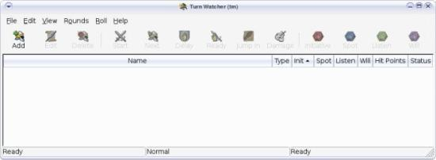
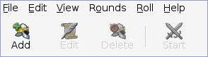
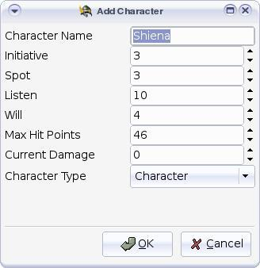
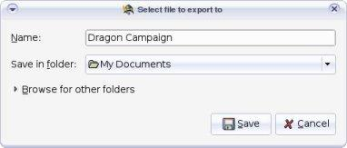
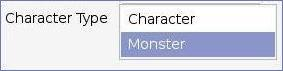
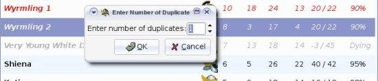
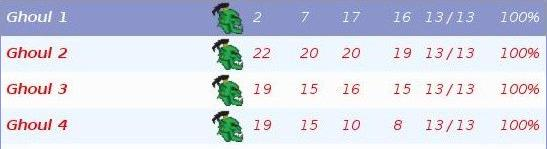

Let's get started
It's easy to make Turn Watcher a valuable tool in
your GM arsenal. The basics are:
- Create a character list of each PC involved in combat
(you can reuse this list over and over for each encounter)
- Create encounter list(s) of opponents
- Import the PC and opponent lists for your encounter
- Start your combat!
Adding Player Characters
The very first time you start Turn Watcher, you will be presented
with a blank slate.

The very first thing to do is to input the relevant information from each
player character (PC) in your campaign (we recommend doing this before
starting the game).
You only need to enter this information once, since Turn Watcher will
remember it all for you. You can also update this information as characters
level.

To begin your character list, click on the Add button on the toolbar.
The Add Character dialog will appear. Enter the character name,
initiative modifier, spot and listen modifiers, and the will save modifier.
Then enter the character's maximum hit points. Lastly, choose
Character from the pull down list and click OK.
Repeat these steps until you've entered all the information for all your
characters.
Tip: Hit the TAB key to advance to the next field.

Doug enters the stats for Shiena, a human
barbarian. He clicks the Add button and types
Shiena in the Character Name field. He then
advances to the next field by hitting the TAB key
and enters Shiena's Initiative modifier, her Spot
and Listen modifiers, her Will save, and finally her
Maximum Hit Points. He leaves Current Damage at 0,
and he makes sure the Character Type is set for
Character. Finally, he clicks OK.
Exporting a Player Character List
Once you've entered all of the PCs that will be participating in the campaign,
you can Export your character list. Choose in the
menu. Type a filename and click the Save button.

Doug is running a campaign for four players. He enters each
PC's relevant stats and Exports to a file called
Dragon Campaign.
Creating Encounters
Clear out any existing PCs and opponents by selecting in
the menu. Make sure you exported any PCs that you added
in the previous step.

Adding opponents to your encounter is similar to adding PCs, but you
choose Monster instead of Character at the bottom
pull-down menu in the Add Character dialog.
For each encounter, add the opponent or opponents that will combat the PCs.
Export the newly added opponents to a filename appropriate for your
encounter.

Tip: For quick duplication of opponents, highlight the
opponent you wish to duplicate and select from
the menu. Turn Watcher will ask how
many times you want to duplicate the selected character or
opponent. You can even do this during combat!

Doug is planning an encounter where the party will run into four
ghouls...
-
He clicks the Add button and types Ghoul 1 in the
Character Name field.
-
Then he enters the ghoul's Initiative, Spot, Listen, and Will save
modifiers, and its Max Hit Points. He ensures the Character
Type is set for Monster. And finally he clicks OK
to store the new opponent.
-
Next, he highlights Ghoul 1 in the list and selects
from the menu.
-
In the Duplicate window, he enters the number 3 and clicks
OK.
He now has four ghouls to engage his players.
Exporting a List of Opponents for an Encounter
Now that you have entered the opponents that you want the PC party to face
in the encounter, Export your opponent list. Choose
in the menu and type a filename, then click the Save
button.
Doug chooses in the
menu and he exports his
list of 4 Ghouls as a file called Ghoul Encounter. He then
selects also in the
menu, and begins another
list of opponents for the next encounter.
Repeat the above steps for each encounter you have planned for your game.
Tip: Create a few random encounter lists that you can use in any
game in your campaign.
|